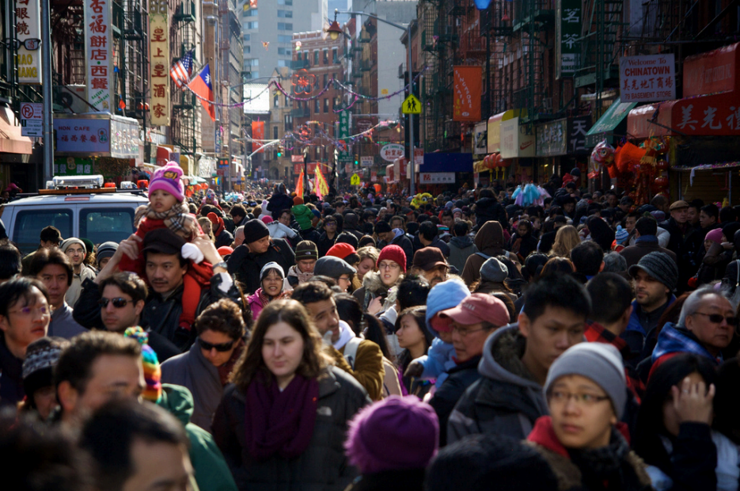
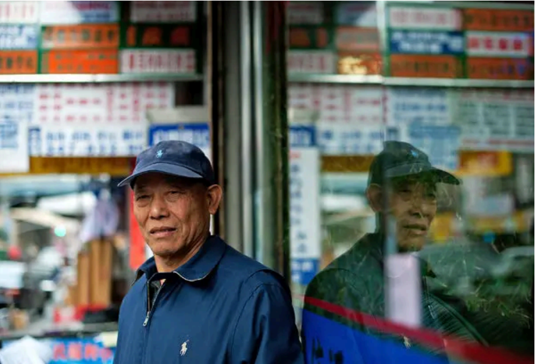

(Un)Burying the Past and Present of NYC's Culture
Hidden History of NYC
NYC Today's Immigrants Resilience and Identity
Academic Source and Image Source
Gallery
Hidden History of NYC
NYC Today's Immigrants Resilience and Identity

